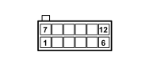

D110 CLOCK SPRING AND STEERING WHEEL CONTROLS COUPLING (DASHBOARD)
- Path
- Electrical equipment > 3 CONNECTORS > D INTERMEDIATE COUPLINGS > D110 CLOCK SPRING AND STEERING WHEEL CONTROLS COUPLING > D110 CLOCK SPRING AND STEERING WHEEL CONTROLS COUPLING (DASHBOARD)
- Kind
- connector pinout (pin -> wire colour -> other end)
- Applies to
- all engines; all production periods
- Interactive page
- https://sloeber94.github.io/elrnDB-fPnd/en/#/169003148
Applies to: all engines; all production periods

Wiring | Colour |
|---|---|
- |
Pin | Cable | Destination | |||
|---|---|---|---|---|---|
Sec.. | Colour | Node | Connect. | Pin | |
1 | 0,35 | NS (black with pink stripe) | 11 | ||
2 | 0,35 | NZ (black with violet stripe) | 8 | ||
3 | 0,35 | SV (pink with green stripe) | 11 | ||
4 | 0,35 | SZ (pink with violet stripe) | 10 | ||
5 | 0,35 | LG (blue with yellow stripe) | 6 | ||
7 | 0,5 | LN (blue with black stripe) | 1 | ||
8 | 0,5 | RN (red with black stripe) | 18 | ||
11 | 0,5 | L (blue) | 21 | ||
12 | 0,5 | MB (brown with white stripe) | 22 | ||